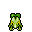
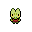

Pokédex / #252

Treecko #252
Grass
It quickly scales even vertical walls. It senses humidity with its tail to predict the next day's weather.
Generation 3 · Hoenn

Stats
| Attack | 45 | |
|---|---|---|
| Defense | 35 | |
| Sp. Atk | 65 | |
| Sp. Def | 55 |
In the wild
| Wild level | 20–30 |
|---|---|
| HP | 40 |
| Experience | 5 |
| Egg groups | Dragon, Monster |
Evolution
- Evolves into Grovyle at level 35.
Moves
| Level | Move | Type | Category | Power | Energy | Cooldown | Effect | |
|---|---|---|---|---|---|---|---|---|
| 1 | Tackle | Normal | Physical | 15 | 15 | 1s | Tackle is one of the most common and basic moves a Pokemon learns. It deals damage with no additional effects. | |
| 5 | Absorb | Grass | Special | 20 | 35 | 5s | Absorb deals damage and the user will recover 50% of the HP drained. | |
| 10 | Quick Attack | Normal | Physical | 40 | 40 | 6s | Quick Attack deals damage and has no secondary effect. | |
| 15 | Slam | Normal | Physical | 80 | 80 | 12s | Slam inflicts damage and has no secondary effect. | |
| 20 | Agility | Normal | Status | – | 80 | 20s | Agility raises the user's Speed by two stages. | |
| 25 | Mega Drain | Grass | Special | 40 | 65 | 12s | Mega Drain inflicts damage, and 50% of the damage dealt to the target is restored to the user. The amount of HP recovered is always rounded down. | |
| 30 | Energy Ball | Grass | Special | 90 | 95 | 15s | Energy Ball deals damage and has a 10% chance of lowering the target's Special Defense by one stage. |
Field abilities
CutStrengthFlashRock Smash
Special abilities
Overgrow
Egg moves
Bullet SeedCrunchCrush ClawDouble KickDragon BreathEndeavorGrass WhistleGrassy TerrainMagical LeafMud SportRazor WindSynthesisWorry Seed
Technical machines
Aerial AceBullet SeedDouble TeamEnergy BallFocus PunchProtectRestRock SlideRock TombSafeguardSolar BeamSubstituteSwords DanceToxic
Drops
| Item | Amount | Chance | |
|---|---|---|---|
| seed | 1–3 | 80% | |
| frostbite herb | 1 | 32% | |
| leaf pendant | 1 | 16% | |
| leaf | 1 | 8.89% | |
| cure herb | 1 | 8% | |
| onigiri | 1–5 | 5% | |
 | treecko doll | 1 | 0.1% |
| Meadow Plate | 1 | 0.002% | |
| TM 20 | 1 | 0.001% | |
| TM 56 | 1 | 0.001% |